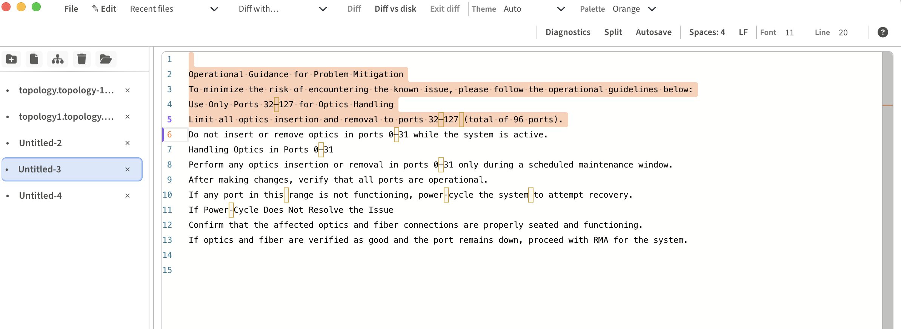
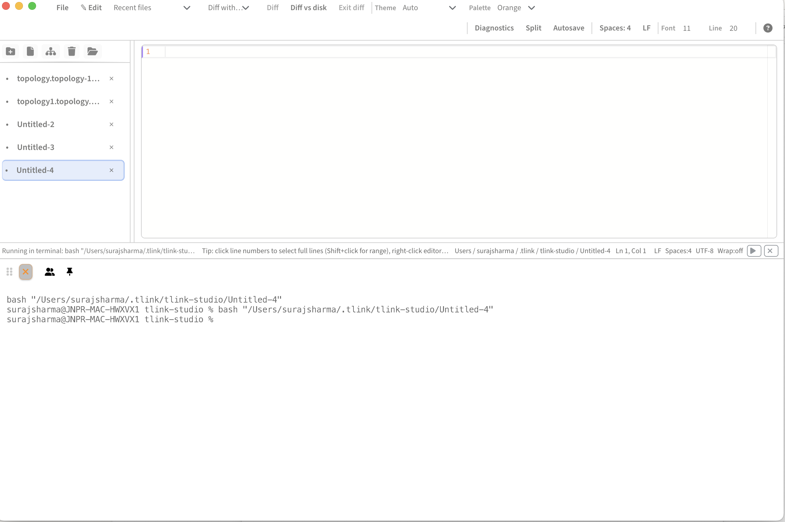
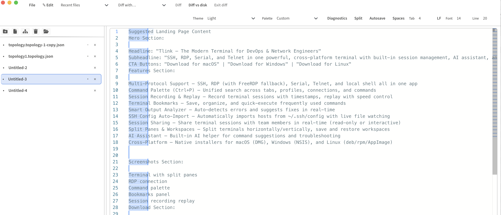
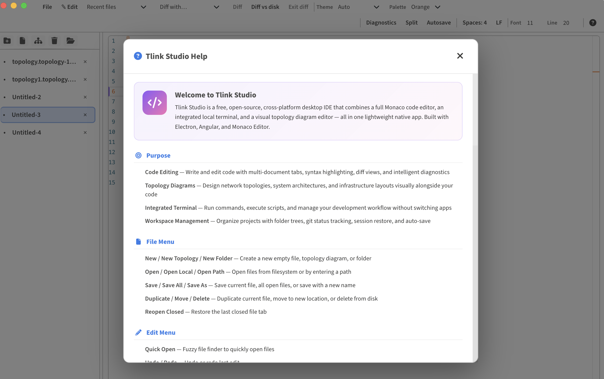

Tlink Studio combines a full Monaco code editor, integrated local terminal, and a visual topology diagram editor — with real-time diagnostics, smart indentation management, and responsive toolbars — all in one lightweight native desktop app.
Full-featured code editor with multi-document tabs, diff view, syntax highlighting, file tree, git status indicators, real-time diagnostics, smart indentation, and session restore.
Visual editor for network topologies and system architectures. Nodes, links, shapes with zoom controls, snap-to-grid, undo/redo, and PNG export.
Built-in xterm.js terminal with local shell support. Run code from the editor. PowerShell, Bash, Zsh, Fish. Side panel quick-terminal.
Code editor + terminal + topology diagrams. Nothing more, nothing less.
The same editor engine that powers VS Code, deeply integrated with multi-document editing, diff views, and intelligent code assistance.

Full local terminal powered by xterm.js with GPU-accelerated rendering. Run commands, execute scripts, and manage your development environment without switching apps.

Manage projects with folder trees, save and restore workspaces, and track Git status directly from the editor with live file-level indicators.

Real-time code diagnostics powered by Monaco language services, and a full-featured indentation management panel for keeping your code clean and consistent.

Design and visualize network topologies, system architectures, and infrastructure layouts right inside your code editor.
Create network nodes and connect them with directed, undirected, or bidirectional links. Live link preview from source to cursor. Drag nodes while in link mode.
Add rectangles, circles, ovals, text labels, and sticky notes. Right-click context menu with edit label, duplicate, and delete.
Zoom +/- buttons with percentage label, fit-to-view, snap-to-grid toggle, and undo/redo — all in a floating control bar.
Toggle snap-to-grid to align nodes, shapes, and text to a 24px grid. Keeps diagrams clean and organized.
Export your topology diagram as a high-resolution 2x PNG image. One click from the canvas control bar.
Full undo/redo history with 120-entry stack. Buttons in the control bar plus Ctrl+Z / Ctrl+Shift+Z keyboard shortcuts.
Customizable color palettes for nodes, links, shapes, and sticky notes. Consistent visual identity for your diagrams.
Topology data stored as YAML/JSON in the editor. Edit visually or as code — both views stay in sync.
Click to select, drag to move, multi-select with marquee. Crosshair cursor in link mode. Smooth trackpad pinch-to-zoom. Rich right-click context menus for nodes, shapes, and links.
Fast access to common actions. Cmd on macOS, Ctrl on Windows/Linux.
| Action | macOS | Windows / Linux |
|---|---|---|
| New file | Cmd+N | Ctrl+N |
| Save | Cmd+S | Ctrl+S |
| Save all | Cmd+Alt+S | Ctrl+Alt+S |
| Save as | Cmd+Shift+S | Ctrl+Shift+S |
| Find | Cmd+F | Ctrl+F |
| Replace | Cmd+H | Ctrl+H |
| Go to line | Cmd+G | Ctrl+G |
| Quick open | Cmd+P | Ctrl+P |
| Undo | Cmd+Z | Ctrl+Z |
| Redo | Cmd+Shift+Z | Ctrl+Shift+Z |
| Toggle word wrap | Via toolbar Wrap button | |
| Topology: Undo | Cmd+Z | Ctrl+Z |
| Topology: Redo | Cmd+Shift+Z | Ctrl+Shift+Z |
| Topology: Zoom | Pinch trackpad or Ctrl+Scroll | |
| Topology: Pan | Scroll wheel or drag empty canvas | |
Free, open source, and cross-platform. A focused code editor with topology diagrams and integrated terminal.